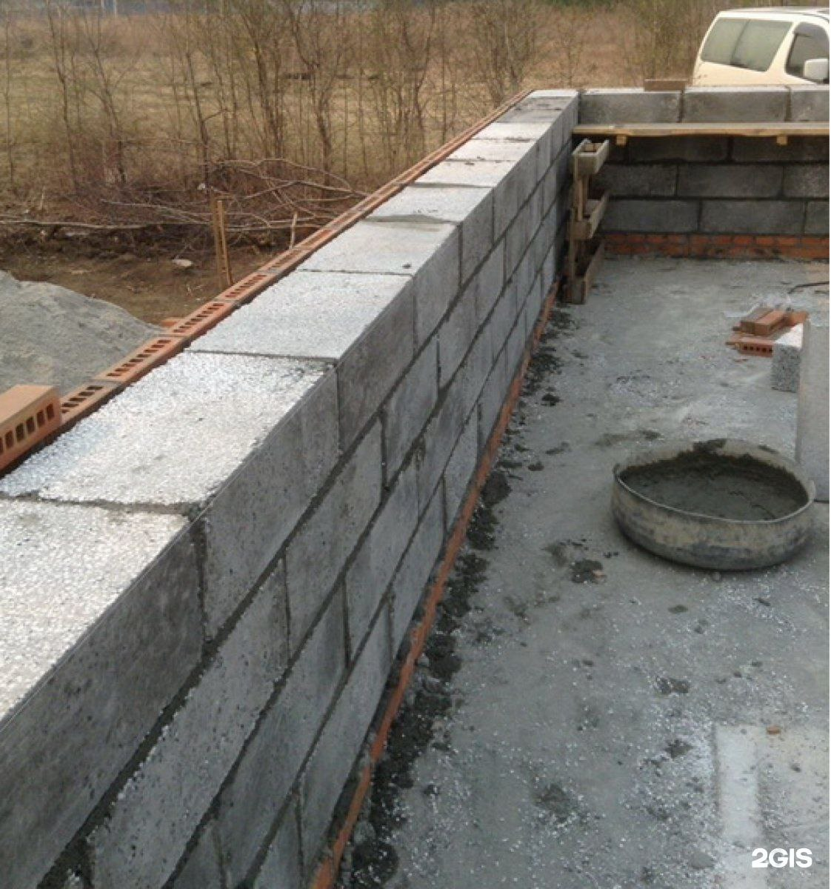

Цоколь



После заливки фундамента выполняется следующая важная часть в
строительстве вашего дома – цоколь. Цоколь – это часть строения
расположенная между фундаментом и основными стенами дома. Он
передает основную нагрузку от здания на фундамент и воспринимает
все атмосферные явления и может быть выполнен в двух решениях:
Монолитный – выполняется в виде бетонной стены вместе с заливкой
фундамента Кладка – выполняется из кирпича или бетонного блока
Высота цоколя зависит от уклона участка, как правило она
составляет от 500 мм. Цена цоколя зависит от уклона участка,
высоты цоколя и используемых материалов. Немало важным фактором
является тепло и гидроизоляция цоколя. Гидроизоляция цоколя – это
защита от сырости и разрушения основания вашего дома. Для этого
используется: рубероид, битумные материалы, рулонная изоляция и
т.д. Теплоизоляция применяется для сокращения потерь тепла внутри
помещения. Для этого используют материалы, имеющие близкое к нулю
водопоглощение и способные сохранять теплозащитные свойства во
влажной среде.
Отделка цоколя может производится как во время строения Вашего
дома, так и после завершения строительства. Для отделки цоколя во
время строительства как правило применяется облицовочный кирпич
типа: Клинкер, Фагот, Литос. Это самое надежное и точное решение.
В случае отделки цоколя после окончания строительства используются
следующие материалы: декаративный камень, декоративная штукатурка,
сайдинг и т.д.
При возведения цоколя одновременно проводят все необходимые
коммуникации (теплосети, трубы и т.д.).
Черновая стяжка
-
Работы по заливке черновой стяжки :
- Выравнивание поверхности грунта песком, с трамбовкой вибромашиной
- Монтаж утеплителя
- Устройство гидроизоляции
- Армирование стяжки арматурой D 10 мм
- Заливка бетоном марки М 200, фракция 5-20